AI Agent 教學應用工作坊 (一)
課程資訊
- 主辦：教育部智慧雨林產業創生人才育成計畫辦公室
- 主題：AI Agent 工作環境建立與使用
- 對象：智慧雨林產業創生人才育成計畫團隊教師
- 主講人：南臺科技大學電子系 楊榮林 教授
- 地點：南臺科技大學 J 棟 J301 教室
活動日期及時間：
| 場次 | 日期 | 時間 |
|---|---|---|
| 場次一 | 115 年 7 月 2 日（四） | 13：00 - 17：30 |
| 場次二 | 115 年 7 月 9 日（四） | 13：00 - 17：30 |
活動議程：
| 時間 | 內容 | 主講人 |
|---|---|---|
| 12：30 - 13：00 | 報到 | |
| 13：00 - 13：10 | 開場 | 余兆棠 教務長 |
| 13：10 - 14：00 | AI Agent 工作環境建置 | 楊榮林 教授 |
| 14：00 - 14：50 | AI 工具認識 | 楊榮林 教授 |
| 14：50 - 15：20 | 茶敘休息（下午茶） | |
| 15：20 - 16：40 | AI 工具實務操作 | 楊榮林 教授 |
| 16：40 - 17：30 | 實作成品展示與交流 | 楊榮林 教授 |
| 17：30 ~ | 賦歸 |
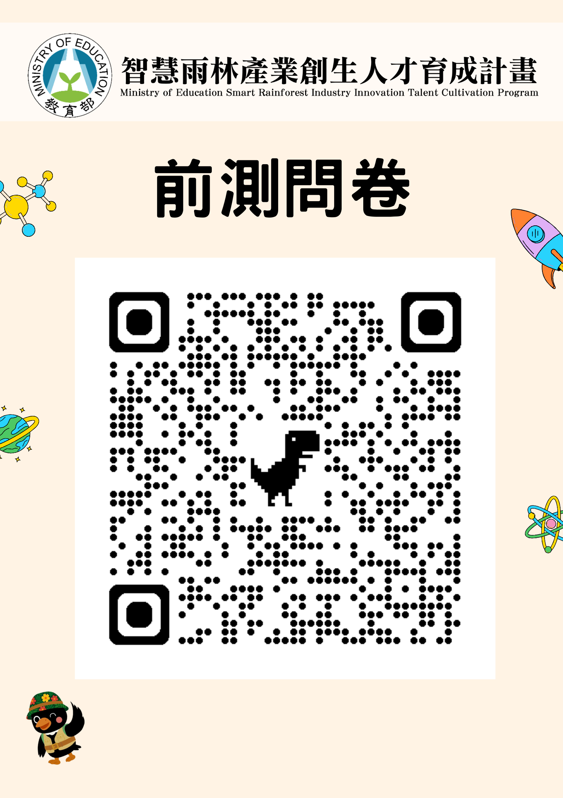
課程大綱
這場工作坊的核心目標，是讓教師理解 AI Agent 如何成為教學與行政工作的實作夥伴。AI Agent 不只是回答問題的聊天工具；它可以在授權範圍內讀取專案檔案、修改內容、執行命令、操作瀏覽器，並把完成任務的過程整理成可以重複使用的流程。
教師不需要先成為程式設計師，才有資格使用這類工具。更重要的是，教師要能用清楚的自然語言描述目標、提供材料、判斷成果是否正確，並把成功經驗逐步固定成講義、Skill、腳本或工作流程。這種能力會降低把教學構想落地的成本，也會讓原本需要大量手動處理的工作變得更容易試作與調整。
本課程的學習重點包括形成性評量、個別化回饋、資料整理、網頁擷取、教材生成、本機專案管理，以及 AI Agent 的安全使用。學員完成課程後，應能判斷哪些任務適合交給聊天式 AI，哪些任務適合交給 AI Agent，哪些資料則應留在本機或先做去識別化處理。

一、工作坊目標與使用情境
教學標籤：必講
本工作坊希望每位教師最後都能帶走一個與自己工作有關的小工具或可重複流程。這個成果不必是完整系統，也不必包含大量程式碼；它可以是整理學生資料的流程、擷取網頁內容的方法、產生教材頁面的模板、建立互動練習的步驟，或把重複行政工作包裝成可再次執行的 Skill。
每位教師的使用情境都不同。不同課程、學校、學生族群與行政需求，會產生不同痛點。因此，課程的目的不是提供單一標準答案，而是讓學員理解 AI Agent 的能力邊界。只要某項工作原本可以透過鍵盤、滑鼠、瀏覽器、檔案與簡單工具完成，就有機會讓 AI Agent 協助規劃、執行與整理。
課程使用 Codex 作為核心工具，並搭配 VS Code、GitHub、GitHub Copilot、Playwright MCP、Ollama、本機範例伺服器與 Scrape Playground。這些工具各自扮演不同角色：Codex 負責專案中的代理工作，VS Code 協助查看檔案，GitHub 支援版本管理與分享，Playwright MCP 支援瀏覽器操作，Ollama 提供 Local LLM 的本機模型情境。學習重點不在背工具名稱，而在理解它們如何組成一條可工作的流程。

二、Capstone 預覽：形成性評量系統與 AI 輔助教學
教學標籤：示範
本系列工作坊最後會以 AI 形成性評量系統作為 Capstone 應用。這個範例不是單純做一份線上測驗，而是呈現一個完整的教學工具想像：教師端可以掌握全班作答狀態，學生端可以完成短測驗並帶走作答回顧，AI 則協助把錯題與教材轉成後續補強方向。
形成性評量的核心不是考倒學生，而是在課堂中快速回答三個問題：學生是否理解剛剛的概念、哪些學生或哪些題型需要教師再補充、學生作答後能不能取得下一步複習方向。若評量資料只停留在分數，教師能做的判斷有限；若能把作答進度、正確率、錯題紀錄與教材內容串起來，評量就會變成課堂中的即時訊號，也會成為學生課後補強的材料。
範例系統包含教師端 Dashboard 與學生端測驗介面。教師端看的是全班狀態，例如目前學生正在做哪一份測驗、完成幾題、正確率如何、是否已提交；學生端則提供登入、逐題作答、提交、成績摘要與逐題作答回顧。這些畫面讓學員先看見 Workshop 1、2、3 逐步累積後可能完成的教學應用，而不是要求一開始就理解所有技術細節。
AI 在這個設計中的位置是學習鷹架，而不是代答工具。學生完成作答後，可以把作答紀錄、題目內容與教材摘要提供給 ChatGPT、Gemini 或其他工具，請 AI 分析錯誤可能來自哪個概念、該回頭複習哪一段教材，以及下一步可以做什麼練習。這樣的流程讓 AI 協助診斷與補強，而最後的理解、判斷與修正仍然需要學生自己完成。
延伸參考：AI Agent 教學應用工作坊 Capstone 預覽：形成性評量系統設計意圖。
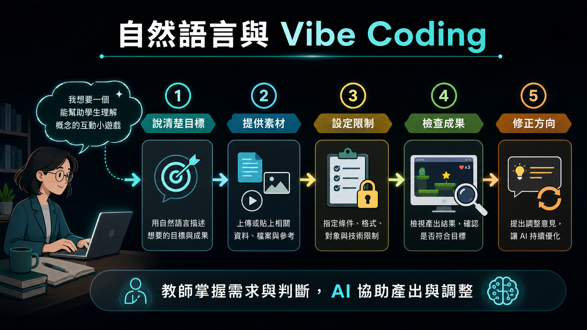
三、自然語言、vibe coding 與程式角色的改變
教學標籤：必講
人與電腦互動的方式正在改變。過去主要靠鍵盤、滑鼠、命令列與圖形介面操作；現在，自然語言也逐漸成為一種操作電腦的介面。使用者可以用日常語言描述目標、限制、資料來源與輸出格式，再由 AI 協助產生、執行或修改具體成果。
Vibe coding 的重點不只是 coding，而是把「想要什麼」說清楚。使用者提供目標、素材與回饋，AI 協助產生程式、網頁、教材、自動化流程或資料整理結果。教師真正需要掌握的是需求描述、結果檢查、資料補充與方向修正，而不是每一行程式的語法細節。
這並不表示程式知識不再重要。當成果要公開部署、處理敏感資料、連接外部系統或長期維護時，仍需要檢查安全性、正確性與可維護性。不過，對許多教學與行政原型而言，AI 已經能讓非程式背景的教師更快做出可試用的版本。
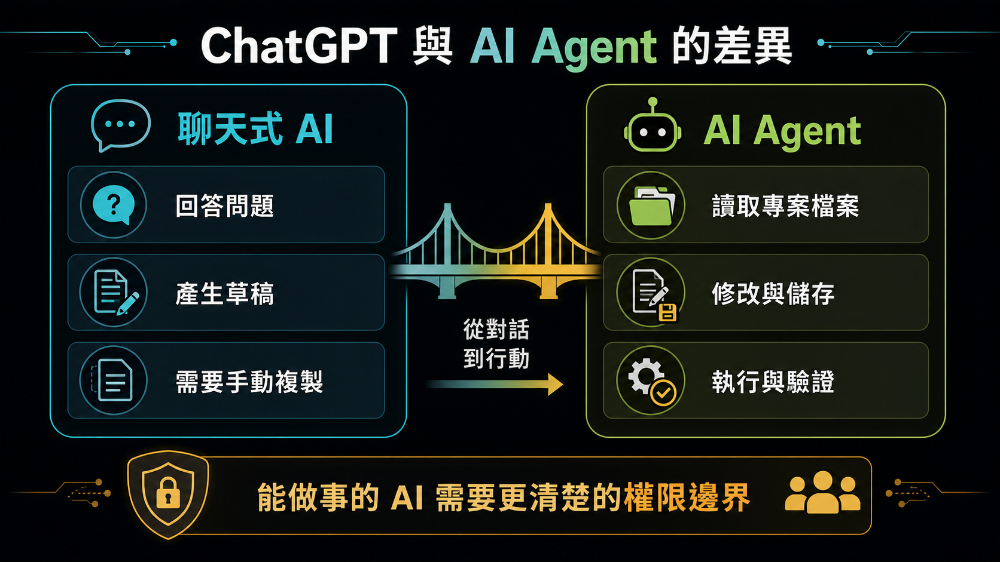
四、ChatGPT 與 AI Agent 的差異
教學標籤：必講
ChatGPT 類工具主要是對話式輔助。使用者輸入問題，AI 回覆說明、步驟、程式碼、摘要或建議。這類工具適合用來整理想法、改寫文字、產生範例、解釋概念，或協助教師準備教材草稿。它的輸出通常仍需要人自行複製、下載、貼到其他工具或手動執行。
AI Agent 更像被授權執行任務的代理人。它不只回覆文字，也可以在指定工作區中讀取檔案、修改檔案、執行命令、開啟瀏覽器、點擊網頁、擷取資料，並把結果存回專案。這種能力讓 AI Agent 適合處理「需要實際產出檔案或操作工具」的任務，例如產生 HTML 講義、整理 CSV、檢查資料格式、啟動本機伺服器或測試網頁。
這種差異也帶來權限與安全問題。聊天工具多半只處理使用者貼上的內容；AI Agent 則可能碰到專案檔案與本機工具。因此，使用 AI Agent 時要清楚知道它能讀什麼、能寫什麼、能不能執行命令，以及哪些動作需要使用者批准。AI Agent 越能做事，就越需要明確邊界與人工監督。

五、資料隱私、雲端 AI 與 Local LLM
教學標籤：必講
教師經常接觸學生資料、成績資料、行政資料與學校內部文件。這些資料不應在沒有處理的情況下直接上傳雲端 AI。即使服務提供者宣稱資料不會被拿去訓練模型，資料離開本機後仍會涉及外部儲存、傳輸與資安風險。
處理敏感資料前，應先做去識別化。例如將學生姓名、學號、班級、座號與其他可識別資訊替換成代碼，只保留分析所需欄位。若資料非常敏感，或學校政策不允許上傳外部服務，就應考慮使用 Local LLM。
Local LLM 是在本機執行的語言模型，例如透過 Ollama 下載並執行 gemma3:12b 之類的模型。它的優點是資料留在本機，不必上傳雲端；缺點是需要較多硬體資源，速度與能力也可能不如大型雲端模型。實務選擇可以分成三類：一般問答使用聊天 AI，需要操作檔案與工具時使用 AI Agent，敏感資料或離線需求則考慮 Local LLM。

六、Token、權限與安全意識
教學標籤：必講
Token 可以理解為 AI 系統處理文字與上下文的單位。越長的對話、越多檔案、越複雜的任務，都會消耗更多 token。AI Agent 若在錯誤方向上反覆嘗試，可能快速消耗額度。因此，使用 Agent 時應設定清楚目標、限制範圍，並在必要時要求它先提出計畫或回報進度。
權限管理是 AI Agent 使用中的核心能力。使用者應避免一開始就開放完整電腦存取權。較安全的做法是把工作限制在特定 project 或 workspace 中，讓 Agent 只能讀取與修改該資料夾下的內容。若任務需要超出範圍，例如下載外部資源、開啟其他資料夾或執行高風險命令，系統應要求使用者批准。
剛開始使用時，不建議讓 Agent 無人看管地長時間執行。教師應觀察它準備做什麼、執行了什麼、是否開始重複嘗試、是否需要額外權限，以及輸出是否符合預期。這樣可以同時控制 token 成本、資料安全與檔案安全。
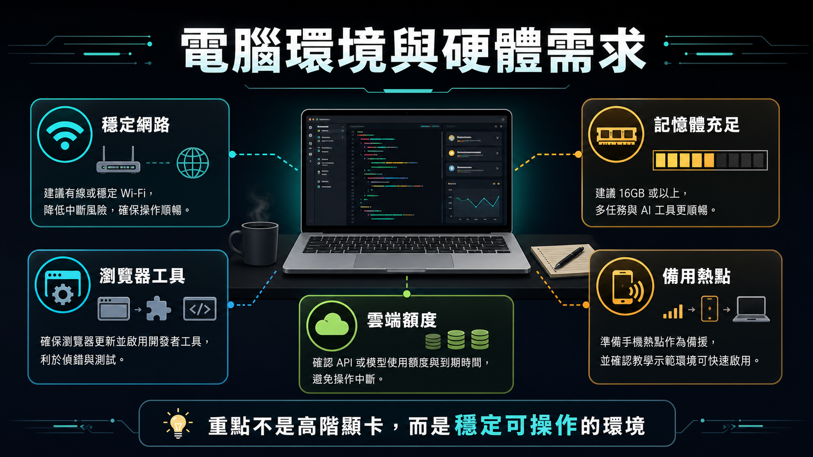
七、電腦環境與硬體需求
教學標籤：必講
本課程主要使用雲端模型，因此模型推論不需要在學員電腦上完成。一般三到五年內的 Windows 筆電或 Mac，通常足以進行課程練習。真正需要注意的是網路穩定性、雲端模型額度、token 消耗，以及同時開啟多個應用程式時的記憶體使用量。
AI Agent 的工作方式通常不是只開一個聊天視窗。實作時可能會同時開啟 Codex、瀏覽器、終端機、VS Code、本機伺服器與專案資料夾。若記憶體太小，整體操作會變慢，瀏覽器與開發工具也可能卡頓。因此，雖然不需要高階顯示卡，仍建議使用記憶體較充足的電腦。
課程現場常見的問題是網路限制與下載速度。Codex App、套件、瀏覽器工具或範例資料若下載很慢，可能不是工具本身故障，而是學校網路、共享頻寬或安全政策造成的限制。正式上課前，應盡量先完成安裝、登入與資料下載；若現場網路不穩，可以暫時使用手機熱點或改由已安裝好的示範環境進行。
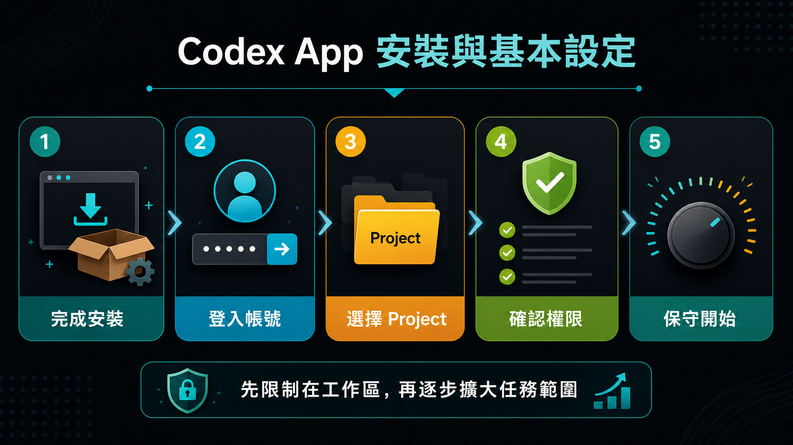
八、Codex App 安裝與基本設定
教學標籤：必講
開始使用 Codex 前，第一步是先從官方或課程提供的下載連結取得 Codex App，依照作業系統完成安裝，然後打開 App 並使用 ChatGPT 帳號登入。安裝完成後，先確認 Codex 能正常啟動、帳號狀態正常，並知道目前使用的是免費、付費或教育方案額度。
第一次設定 Codex 時，應先選擇一個明確的 project 或 workspace。Codex 看起來像聊天工具，但它會綁定特定資料夾；這表示它能在指定範圍內讀取檔案、修改檔案與執行工具。開始任務前，應確認目前開啟的是哪個專案、可讀寫範圍在哪裡，以及執行命令時是否需要批准。
基本設定應以安全與可理解為優先。若使用者不是程式背景，可以選擇較白話的回應方式，讓 Codex 用一般語言說明它正在做什麼。檔案權限建議先限制在工作區內，並在需要下載外部資源、開啟其他資料夾或執行較高風險命令時要求批准。這樣可以保留使用者的控制權，也能避免 Agent 無意間碰到不相關檔案。
不建議初學者一開始就開啟完整存取權。完整存取權可能讓 Codex 接觸更大範圍的檔案、下載工具或執行高風險操作。較好的學習方式是先用小型練習專案建立信任與理解，再逐步擴大任務範圍。
設定細節可參考外部講義：Codex App 設定與權限邊界說明。這份講義整理工作模式、權限、沙盒、網路存取與保守設定檢查，適合在 Workshop 1 開始前或 Module 1 操作前先閱讀。

九、Module 1：Windows 11 Vibe Coding 環境準備
教學標籤：示範
本節以 Windows 11 筆電為主，目標是先完成可用的 Vibe Coding 工作環境，而不是立刻精通所有工具。學員需取得課程資料、確認資料夾位置，並能在 Codex 中開啟正確的 project。
建議優先使用課程提供的 setup-windows.bat 完成一鍵安裝；若受限於權限、網路或資安政策，再依補充講義手動安裝。完成後，確認 code、git、node、npm、uv、gh 與 codex 都能顯示版本號。
帳號部分需確認 ChatGPT / Codex 與 GitHub 都能登入。Codex CLI 透過瀏覽器登入 ChatGPT 帳號；GitHub CLI 使用 gh auth login 與一次性代碼登入，不需要先設定 SSH 金鑰。
完成本節後，學員應能啟動 Codex CLI、讓 Codex 讀取第一個 project，並具備 VS Code、Python、Node.js 與 GitHub CLI 的基本可用環境。
補充材料：Windows 11 Vibe Coding 與 AI Agent 環境建置

十、Markdown、AGENTS.md、Skill 與可讀文件
教學標籤：必講
Markdown 是 AI 工作流程中非常重要的文件格式。它是純文字檔，但能用標題、段落、清單、表格、程式區塊與連結整理內容。對人而言，Markdown 容易閱讀；對 AI 而言，Markdown 結構清楚，適合當作教材、規則、任務說明或操作手冊。
AGENTS.md 可用來描述專案中的工作規則。例如專案如何啟動、檔案放在哪裡、測試如何執行、產出格式有什麼限制、哪些資料不能修改。這類文件會影響 AI Agent 的工作方式，讓它不必每次都重新猜測專案慣例。
Skill 是把可重複流程固定下來的方式。當某項任務未來會一再發生，例如整理課程名冊、產生固定格式講義、擷取特定網站資料或建立同類型報表，就適合把流程寫成 Skill。Skill 的價值在於把一次試成功的經驗，轉換成下次可以穩定呼叫的能力。
延伸練習可參考：AGENTS.md 入門講義：給 Codex 的簡單專案規則。這份材料聚焦最簡單的 Codex project，提供一份短版 AGENTS.md 範本，並包含三個入門範例，適合課堂中讓學員直接改成自己的專案版本。
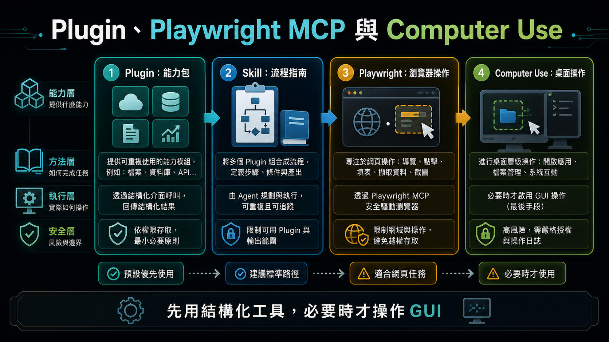
十一、Plugin、Playwright MCP 與 Computer Use
教學標籤：時間不足可略過
在 Codex 的能力架構中，Plugin 與 Skill 是不同層級的概念。Plugin 比較像「能力包」或「工具整合包」：安裝後可能提供新的工具、apps、MCP servers、瀏覽器控制、桌面操作或其他系統能力。Computer Use、Record & Replay 這類能力可以理解為 Plugin 層級的功能，它們讓 Codex 能接觸原本不能直接操作的環境，例如桌面視窗、使用者操作紀錄或外部服務。
Skill 則比較像「任務說明書」或「可重複工作流程」。它不一定提供新的底層工具，而是告訴 Codex 遇到某類任務時應該怎麼判斷、讀哪些材料、用哪些工具、照什麼步驟完成，以及最後如何驗證。例如 Image Gen skill 會引導 Codex 在需要圖片產生或圖片編修時使用合適的圖片工具；Playwright CLI skill 會引導 Codex 用命令列方式操作瀏覽器、截圖、測試或除錯網頁流程。
可以用一句話區分：Plugin 提供「Codex 能用什麼能力」，Skill 提供「Codex 遇到某類任務時該怎麼做」。有些 Plugin 會附帶 Skill，讓新工具不只是被安裝，也有對應的使用流程；但兩者仍不是同一件事。Plugin 偏向能力與連接，Skill 偏向流程與方法。
Playwright MCP 是結構化瀏覽器控制能力，讓 AI Agent 能開啟網頁、點擊按鈕、填寫表單、等待 JavaScript 渲染、截圖與擷取資料。這比單純讀取 HTML 更接近真實使用者的操作方式，也適合處理需要登入、按鈕互動或動態載入資料的頁面。若同時有 Playwright 相關 Skill，Skill 會進一步規範何時使用 Playwright、如何記錄截圖、如何驗證頁面是否真的完成操作。
Computer Use 是更一般化的 GUI 操作能力，可以操作桌面視窗、點擊應用程式與輸入文字。它很強，但也更難控管，因此應視為最後手段。若任務有 API、CLI、MCP 或其他結構化工具可用，應優先使用那些較可檢查、較穩定的方式；只有在必須操作圖形介面時，才考慮使用 Computer Use。Record & Replay 也屬於偏工具能力的概念：它先記錄一次操作，再讓 AI Agent 之後依照相同意圖重做，適合重複性高、風險可控的任務。

十二、Record & Replay：從示範到意圖式重播
教學標籤：延伸閱讀
Record & Replay 的概念是先記錄一次使用者操作，再讓 AI Agent 之後依照相同意圖重做。它不是單純記住滑鼠座標，而是嘗試理解任務目標，例如開啟某頁、選擇某項、下載某份資料、建立報表或完成某個行政流程。
Record 是示範與萃取流程：使用者先做一次，讓 Codex 觀察任務目標、重要欄位、輸入輸出、判斷點與完成條件，並整理成可重複使用的 skill。Replay 則是依照這份 skill 重新完成任務；下一次使用者提供新的日期、檔案或查詢條件時，Codex 不是逐格播放錄影，而是依照同一個任務意圖重新操作。
這與傳統 macro 不同。傳統巨集通常記住固定的點擊位置與按鍵順序，畫面一變、按鈕位置改變或資料筆數不同，就可能失效。Record & Replay 比較接近「把示範轉成任務知識」：它保留流程目的與檢查方法，因此在檔名、位置或畫面略有不同時，有機會調整策略。不過如果流程大改、權限不足或成功條件沒有定義，重播仍可能失敗。
它也不等於傳統 web scraping。Web scraping 通常針對 HTML、API 回應或 DOM 結構擷取資料，適合大量、規則、可重複的公開資料處理；Record & Replay 則較適合「人本來會在 GUI 中操作」的流程，例如登入後台、選日期、匯出報表、重新命名檔案並檢查輸出。能用 API、CSV 下載或結構化資料來源時，應優先使用那些方式；需要操作畫面時，才考慮 Playwright、Computer Use 或 Record & Replay。
這類功能適合用在重複性高、步驟清楚、風險可控的任務。不要把它當成繞過網站限制、驗證碼、付費牆或服務條款的工具；若流程涉及帳號登入、學生資料、行政資料或高權限操作，仍應保持人工監督。好的重播流程應有明確輸入、輸出、停止條件與驗證方式。
截至 2026-07-06 查核 OpenAI Developers 官方文件，Record & Replay 標示為可在 macOS 使用，且需要 Computer Use 可用並已啟用；初始可用地區不包含 EEA、英國與瑞士。官方頁面目前沒有列出 Windows 版 Record & Replay 可用，因此課程材料應暫時寫成「Codex App 可能有 Windows 版本，但 Record & Replay 本功能目前以官方文件列出的 macOS 支援為準」。日後若官方文件更新，這一段應重新查核。查核來源：https://developers.openai.com/codex/record-and-replay
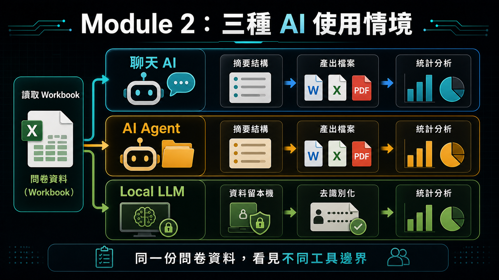
十三、Module 2：用問卷資料比較三種 AI 使用情境
教學標籤：示範
本節讓學員用同一份問卷資料比較三種 AI 使用情境。近期的雲端聊天 AI，例如 ChatGPT 或 Claude，已經可以直接讀取完整 .xlsx，不需要使用者把問卷資料切段或只貼幾列樣本。它適合快速理解 workbook 結構、摘要欄位、提出分析計畫與產生初步解讀；但分析結果通常仍停留在對話或附件中，後續若要形成可重複、可檢查的專案輸出，仍需要整理保存與驗證。
AI Agent，例如 Codex 或 Claude Code，適合進入專案資料夾，直接讀取 pre-test.xlsx 與 post-test.xlsx，解析問卷資料、檢查欄位與缺漏、計算信度與基本效度線索，並對前後測共同填答者進行 paired t-test。重點不只是得到統計數字，而是讓學員看見 Agent 可以把結果自動寫成 Markdown、CSV 或 HTML 檔，並把清理資料、分析步驟與驗證紀錄留在專案中。
Local LLM 則用來討論資料留在本機的價值。雖然一般筆電的本機運算能力很難和雲端 AI 服務相比，模型速度、能力與上下文長度也可能受限，但它的優點是資料不必離開本機，適合用來示範隱私保護、離線草稿、敏感資料先行摘要、或在上傳雲端前做去識別化處理。重點不是宣稱 Local LLM 比雲端更強，而是讓學員理解「資料留在本機」本身就是一種重要能力。
配套的 learning-by-doing 練習材料請見：Codex 問卷 Workbook 分析實作指南。這份材料帶學員直接用 Codex 分析問卷 workbook，從資料結構判讀、去識別化結果表，到前測信效度 HTML 報告，作為本節觀念比較的實作延伸。
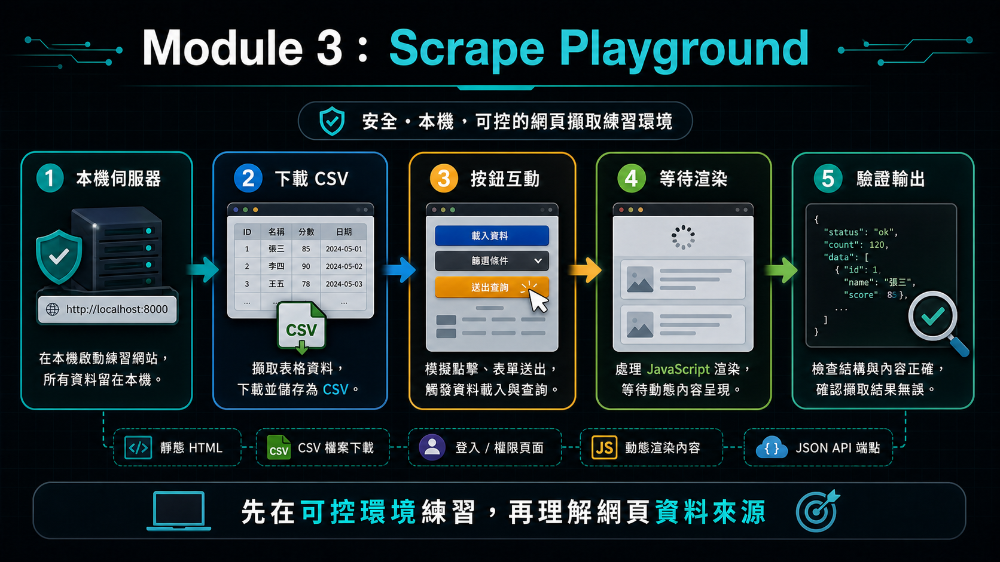
十四、Module 3：Scrape Playground 與網頁擷取練習
教學標籤：示範
本節使用本機端 Scrape Playground 模擬網頁擷取任務。使用本機環境練習的好處是安全、可控、不涉及真實網站的服務條款與隱私問題。學員可以在可預期的情境中理解網頁資料從哪裡來，以及 AI Agent 如何協助擷取與整理。
第一類練習是下載公開 CSV。學員需要啟動本機伺服器，開啟指定頁面，找到課程名冊連結，選擇課程，下載 CSV，存到指定資料夾，並檢查檔案內容。這個任務包含開服務、瀏覽網頁、找資料、下載檔案、命名與驗證等完整步驟。
第二類練習是處理需要登入、選項或按鈕互動的頁面。這類頁面不一定能用單一網址或 curl 直接取得資料，可能需要先登入、點選下拉選單、按下載鈕或等待畫面更新。Playwright MCP 可以讓 AI Agent 模擬使用者操作，補足傳統靜態擷取的限制。
第三類練習是 JavaScript 渲染頁面與 JSON 端點。畫面上看得到表格，不代表原始 HTML 裡就有表格資料。有些頁面會先載入框架，再透過 API 取得 JSON 並渲染到畫面上。AI Agent 可以等待渲染後擷取，也可以分析網路請求找出資料端點。這能幫助學員理解「看得到資料」與「抓得到資料」之間的差別。
補充材料：Scrape Playground web server
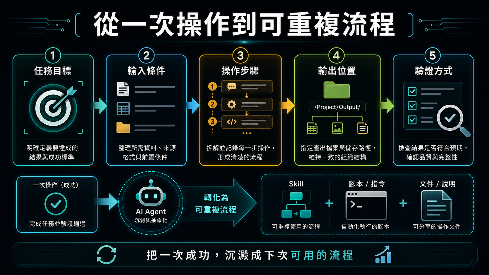
十五、從一次操作到可重複流程
教學標籤：必講
一次成功的操作只是開始。真正有價值的是把成功操作整理成未來可以重複執行的流程。若某項任務每週、每月或每學期都會做，就不應每次重新與 AI 對話，而應把流程固定成 Skill、腳本或清楚的操作文件。
可重複流程至少需要描述任務目標、輸入條件、操作步驟、輸出位置與驗證方式。以下載 CSV 為例，流程應包含如何確認本機伺服器可連線、開啟哪個 URL、支援哪些課程代碼、下載後存到哪個資料夾，以及如何確認檔案內容正確。
這種整理工作能把 AI Agent 從「現場聊天工具」轉變成「可累積的工作系統」。教師每次完成一個流程，都可以把經驗沉澱到專案中，讓下一次任務更快、更穩定，也更容易交給同事或學生使用。
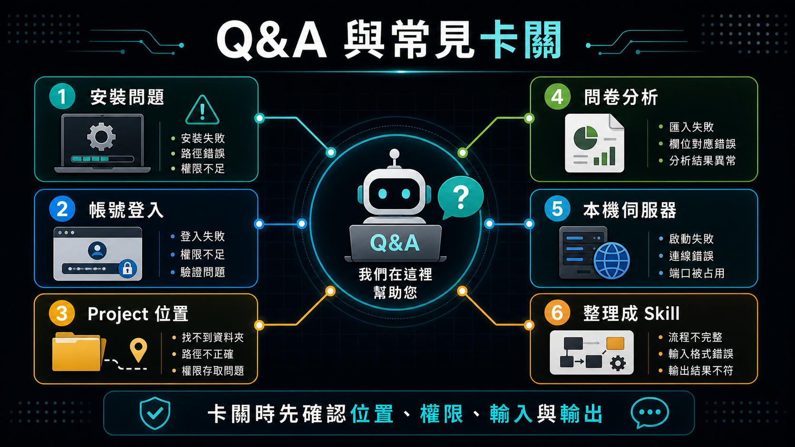
十六、Q&A 與常見卡關整理
教學標籤：時間不足可略過
- 工作坊主軸：環境準備、project 操作、資料分析、網頁擷取、可重複流程。
- 安裝問題：權限、
winget、App Installer、PATH、網路下載速度。 - 帳號問題：ChatGPT / Codex 登入、GitHub 登入、額度與教育方案。
- Project 問題：開錯資料夾、找不到教材、輸出位置不明。
- 問卷分析問題：欄位解讀、前後測配對、去識別化、結果驗證。
- Scrape Playground 問題：本機伺服器、URL / port、下載位置、JavaScript / JSON 資料來源。
- 可重複流程問題：何時整理成文件、腳本或 Skill。
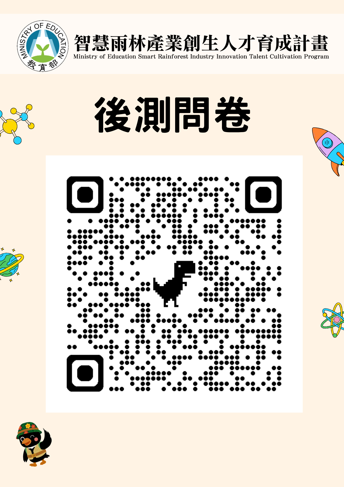
AI Agent Teaching Applications Workshop (1)
Course Information
- Organizer：教育部智慧雨林產業創生人才育成計畫辦公室
- Topic：AI Agent 工作環境建立與使用
- Audience：智慧雨林產業創生人才育成計畫團隊teachers
- Speaker：南臺科技大學電子系 楊榮林 教授
- Location：南臺科技大學 J 棟 J301 教室
活動日期及時間：
| Session | Date | Time |
|---|---|---|
| Session一 | 115 年 7 月 2 日（四） | 13：00 - 17：30 |
| Session二 | 115 年 7 月 9 日（四） | 13：00 - 17：30 |
活動議程：
| Time | Content | Speaker |
|---|---|---|
| 12：30 - 13：00 | Check-in | |
| 13：00 - 13：10 | Opening | 余兆棠 教務長 |
| 13：10 - 14：00 | AI Agent 工作環境建置 | 楊榮林 教授 |
| 14：00 - 14：50 | AI 工具認識 | 楊榮林 教授 |
| 14：50 - 15：20 | Tea Break | |
| 15：20 - 16：40 | AI 工具實務操作 | 楊榮林 教授 |
| 16：40 - 17：30 | Demo and Exchange | 楊榮林 教授 |
| 17：30 ~ | Dismissal |
AI Agent Teaching Applications Workshop (1)
這場工作坊的核心目標，是讓教師理解 AI Agent 如何成為教學與行政工作的實作夥伴。AI Agent 不只是回答問題的聊天工具；它可以在授權範圍內讀取專案檔案、修改內容、執行命令、操作瀏覽器，並把完成任務的過程整理成可以重複使用的流程。
教師不需要先成為程式設計師，才有資格使用這類工具。更重要的是，教師要能用清楚的自然語言描述目標、提供材料、判斷成果是否正確，並把成功經驗逐步固定成講義、Skill、腳本或工作流程。這種能力會降低把教學構想落地的成本，也會讓原本需要大量手動處理的工作變得更容易試作與調整。
本課程的學習重點包括形成性評量、個別化回饋、資料整理、網頁擷取、教材生成、本機專案管理，以及 AI Agent 的安全使用。學員完成課程後，應能判斷哪些任務適合交給聊天式 AI，哪些任務適合交給 AI Agent，哪些資料則應留在本機或先做去識別化處理。
1. Workshop Goals and Use Cases
教學標籤：必講
本工作坊希望每位教師最後都能帶走一個與自己工作有關的小工具或可重複流程。這個成果不必是完整系統，也不必包含大量程式碼；它可以是整理學生資料的流程、擷取網頁內容的方法、產生教材頁面的模板、建立互動練習的步驟，或把重複行政工作包裝成可再次執行的 Skill。
每位教師的使用情境都不同。不同課程、學校、學生族群與行政需求，會產生不同痛點。因此，課程的目的不是提供單一標準答案，而是讓學員理解 AI Agent 的能力邊界。只要某項工作原本可以透過鍵盤、滑鼠、瀏覽器、檔案與簡單工具完成，就有機會讓 AI Agent 協助規劃、執行與整理。
課程使用 Codex 作為核心工具，並搭配 VS Code、GitHub、GitHub Copilot、Playwright MCP、Ollama、本機範例伺服器與 Scrape Playground。這些工具各自扮演不同角色：Codex 負責專案中的代理工作，VS Code 協助查看檔案，GitHub 支援版本管理與分享，Playwright MCP 支援瀏覽器操作，Ollama 提供 Local LLM 的本機模型情境。學習重點不在背工具名稱，而在理解它們如何組成一條可工作的流程。
2. Capstone Preview: Formative Assessment and AI-Assisted Teaching
教學標籤：示範
本系列工作坊最後會以 AI 形成性評量系統作為 Capstone 應用。這個範例不是單純做一份線上測驗，而是呈現一個完整的教學工具想像：教師端可以掌握全班作答狀態，學生端可以完成短測驗並帶走作答回顧，AI 則協助把錯題與教材轉成後續補強方向。
形成性評量的核心不是考倒學生，而是在課堂中快速回答三個問題：學生是否理解剛剛的概念、哪些學生或哪些題型需要教師再補充、學生作答後能不能取得下一步複習方向。若評量資料只停留在分數，教師能做的判斷有限；若能把作答進度、正確率、錯題紀錄與教材內容串起來，評量就會變成課堂中的即時訊號，也會成為學生課後補強的材料。
範例系統包含教師端 Dashboard 與學生端測驗介面。教師端看的是全班狀態，例如目前學生正在做哪一份測驗、完成幾題、正確率如何、是否已提交；學生端則提供登入、逐題作答、提交、成績摘要與逐題作答回顧。這些畫面讓學員先看見 Workshop 1、2、3 逐步累積後可能完成的教學應用，而不是要求一開始就理解所有技術細節。
AI 在這個設計中的位置是學習鷹架，而不是代答工具。學生完成作答後，可以把作答紀錄、題目內容與教材摘要提供給 ChatGPT、Gemini 或其他工具，請 AI 分析錯誤可能來自哪個概念、該回頭複習哪一段教材，以及下一步可以做什麼練習。這樣的流程讓 AI 協助診斷與補強，而最後的理解、判斷與修正仍然需要學生自己完成。
延伸參考：AI Agent 教學應用工作坊 Capstone 預覽：形成性評量系統設計意圖。
3. Natural Language, Vibe Coding, and the Changing Role of Code
教學標籤：必講
人與電腦互動的方式正在改變。過去主要靠鍵盤、滑鼠、命令列與圖形介面操作；現在，自然語言也逐漸成為一種操作電腦的介面。使用者可以用日常語言描述目標、限制、資料來源與輸出格式，再由 AI 協助產生、執行或修改具體成果。
Vibe coding 的重點不只是 coding，而是把「想要什麼」說清楚。使用者提供目標、素材與回饋，AI 協助產生程式、網頁、教材、自動化流程或資料整理結果。教師真正需要掌握的是需求描述、結果檢查、資料補充與方向修正，而不是每一行程式的語法細節。
這並不表示程式知識不再重要。當成果要公開部署、處理敏感資料、連接外部系統或長期維護時，仍需要檢查安全性、正確性與可維護性。不過，對許多教學與行政原型而言，AI 已經能讓非程式背景的教師更快做出可試用的版本。
4. Differences Between ChatGPT and AI Agents
教學標籤：必講
ChatGPT 類工具主要是對話式輔助。使用者輸入問題，AI 回覆說明、步驟、程式碼、摘要或建議。這類工具適合用來整理想法、改寫文字、產生範例、解釋概念，或協助教師準備教材草稿。它的輸出通常仍需要人自行複製、下載、貼到其他工具或手動執行。
AI Agent 更像被授權執行任務的代理人。它不只回覆文字，也可以在指定工作區中讀取檔案、修改檔案、執行命令、開啟瀏覽器、點擊網頁、擷取資料，並把結果存回專案。這種能力讓 AI Agent 適合處理「需要實際產出檔案或操作工具」的任務，例如產生 HTML 講義、整理 CSV、檢查資料格式、啟動本機伺服器或測試網頁。
這種差異也帶來權限與安全問題。聊天工具多半只處理使用者貼上的內容；AI Agent 則可能碰到專案檔案與本機工具。因此，使用 AI Agent 時要清楚知道它能讀什麼、能寫什麼、能不能執行命令，以及哪些動作需要使用者批准。AI Agent 越能做事，就越需要明確邊界與人工監督。
5. Data Privacy, Cloud AI, and Local LLMs
教學標籤：必講
教師經常接觸學生資料、成績資料、行政資料與學校內部文件。這些資料不應在沒有處理的情況下直接上傳雲端 AI。即使服務提供者宣稱資料不會被拿去訓練模型，資料離開本機後仍會涉及外部儲存、傳輸與資安風險。
處理敏感資料前，應先做去識別化。例如將學生姓名、學號、班級、座號與其他可識別資訊替換成代碼，只保留分析所需欄位。若資料非常敏感，或學校政策不允許上傳外部服務，就應考慮使用 Local LLM。
Local LLM 是在本機執行的語言模型，例如透過 Ollama 下載並執行 gemma3:12b 之類的模型。它的優點是資料留在本機，不必上傳雲端；缺點是需要較多硬體資源，速度與能力也可能不如大型雲端模型。實務選擇可以分成三類：一般問答使用聊天 AI，需要操作檔案與工具時使用 AI Agent，敏感資料或離線需求則考慮 Local LLM。
6. Tokens, Permissions, and Security Awareness
教學標籤：必講
Token 可以理解為 AI 系統處理文字與上下文的單位。越長的對話、越多檔案、越複雜的任務，都會消耗更多 token。AI Agent 若在錯誤方向上反覆嘗試，可能快速消耗額度。因此，使用 Agent 時應設定清楚目標、限制範圍，並在必要時要求它先提出計畫或回報進度。
權限管理是 AI Agent 使用中的核心能力。使用者應避免一開始就開放完整電腦存取權。較安全的做法是把工作限制在特定 project 或 workspace 中，讓 Agent 只能讀取與修改該資料夾下的內容。若任務需要超出範圍，例如下載外部資源、開啟其他資料夾或執行高風險命令，系統應要求使用者批准。
剛開始使用時，不建議讓 Agent 無人看管地長時間執行。教師應觀察它準備做什麼、執行了什麼、是否開始重複嘗試、是否需要額外權限，以及輸出是否符合預期。這樣可以同時控制 token 成本、資料安全與檔案安全。
7. Computer Environment and Hardware Requirements
教學標籤：必講
本課程主要使用雲端模型，因此模型推論不需要在學員電腦上完成。一般三到五年內的 Windows 筆電或 Mac，通常足以進行課程練習。真正需要注意的是網路穩定性、雲端模型額度、token 消耗，以及同時開啟多個應用程式時的記憶體使用量。
AI Agent 的工作方式通常不是只開一個聊天視窗。實作時可能會同時開啟 Codex、瀏覽器、終端機、VS Code、本機伺服器與專案資料夾。若記憶體太小，整體操作會變慢，瀏覽器與開發工具也可能卡頓。因此，雖然不需要高階顯示卡，仍建議使用記憶體較充足的電腦。
課程現場常見的問題是網路限制與下載速度。Codex App、套件、瀏覽器工具或範例資料若下載很慢，可能不是工具本身故障，而是學校網路、共享頻寬或安全政策造成的限制。正式上課前，應盡量先完成安裝、登入與資料下載；若現場網路不穩，可以暫時使用手機熱點或改由已安裝好的示範環境進行。
8. Codex App Installation and Basic Settings
教學標籤：必講
開始使用 Codex 前，第一步是先從官方或課程提供的下載連結取得 Codex App，依照作業系統完成安裝，然後打開 App 並使用 ChatGPT 帳號登入。安裝完成後，先確認 Codex 能正常啟動、帳號狀態正常，並知道目前使用的是免費、付費或教育方案額度。
第一次設定 Codex 時，應先選擇一個明確的 project 或 workspace。Codex 看起來像聊天工具，但它會綁定特定資料夾；這表示它能在指定範圍內讀取檔案、修改檔案與執行工具。開始任務前，應確認目前開啟的是哪個專案、可讀寫範圍在哪裡，以及執行命令時是否需要批准。
基本設定應以安全與可理解為優先。若使用者不是程式背景，可以選擇較白話的回應方式，讓 Codex 用一般語言說明它正在做什麼。檔案權限建議先限制在工作區內，並在需要下載外部資源、開啟其他資料夾或執行較高風險命令時要求批准。這樣可以保留使用者的控制權，也能避免 Agent 無意間碰到不相關檔案。
不建議初學者一開始就開啟完整存取權。完整存取權可能讓 Codex 接觸更大範圍的檔案、下載工具或執行高風險操作。較好的學習方式是先用小型練習專案建立信任與理解，再逐步擴大任務範圍。
設定細節可參考外部講義：Codex App 設定與權限邊界說明。這份講義整理工作模式、權限、沙盒、網路存取與保守設定檢查，適合在 Workshop 1 開始前或 Module 1 操作前先閱讀。
9. Module 1: Windows 11 Vibe Coding Environment Preparation
教學標籤：示範
本節以 Windows 11 筆電為主，目標是先完成可用的 Vibe Coding 工作環境，而不是立刻精通所有工具。學員需取得課程資料、確認資料夾位置，並能在 Codex 中開啟正確的 project。
建議優先使用課程提供的 setup-windows.bat 完成一鍵安裝；若受限於權限、網路或資安政策，再依補充講義手動安裝。完成後，確認 code、git、node、npm、uv、gh 與 codex 都能顯示版本號。
帳號部分需確認 ChatGPT / Codex 與 GitHub 都能登入。Codex CLI 透過瀏覽器登入 ChatGPT 帳號；GitHub CLI 使用 gh auth login 與一次性代碼登入，不需要先設定 SSH 金鑰。
完成本節後，學員應能啟動 Codex CLI、讓 Codex 讀取第一個 project，並具備 VS Code、Python、Node.js 與 GitHub CLI 的基本可用環境。
補充材料：Windows 11 Vibe Coding 與 AI Agent 環境建置
10. Markdown, AGENTS.md, Skills, and Readable Documents
教學標籤：必講
Markdown 是 AI 工作流程中非常重要的文件格式。它是純文字檔，但能用標題、段落、清單、表格、程式區塊與連結整理內容。對人而言，Markdown 容易閱讀；對 AI 而言，Markdown 結構清楚，適合當作教材、規則、任務說明或操作手冊。
AGENTS.md 可用來描述專案中的工作規則。例如專案如何啟動、檔案放在哪裡、測試如何執行、產出格式有什麼限制、哪些資料不能修改。這類文件會影響 AI Agent 的工作方式，讓它不必每次都重新猜測專案慣例。
Skill 是把可重複流程固定下來的方式。當某項任務未來會一再發生，例如整理課程名冊、產生固定格式講義、擷取特定網站資料或建立同類型報表，就適合把流程寫成 Skill。Skill 的價值在於把一次試成功的經驗，轉換成下次可以穩定呼叫的能力。
延伸練習可參考：AGENTS.md 入門講義：給 Codex 的簡單專案規則。這份材料聚焦最簡單的 Codex project，提供一份短版 AGENTS.md 範本，並包含三個入門範例，適合課堂中讓學員直接改成自己的專案版本。
11. Plugins, Playwright MCP, and Computer Use
教學標籤：時間不足可略過
在 Codex 的能力架構中，Plugin 與 Skill 是不同層級的概念。Plugin 比較像「能力包」或「工具整合包」：安裝後可能提供新的工具、apps、MCP servers、瀏覽器控制、桌面操作或其他系統能力。Computer Use、Record & Replay 這類能力可以理解為 Plugin 層級的功能，它們讓 Codex 能接觸原本不能直接操作的環境，例如桌面視窗、使用者操作紀錄或外部服務。
Skill 則比較像「任務說明書」或「可重複工作流程」。它不一定提供新的底層工具，而是告訴 Codex 遇到某類任務時應該怎麼判斷、讀哪些材料、用哪些工具、照什麼步驟完成，以及最後如何驗證。例如 Image Gen skill 會引導 Codex 在需要圖片產生或圖片編修時使用合適的圖片工具；Playwright CLI skill 會引導 Codex 用命令列方式操作瀏覽器、截圖、測試或除錯網頁流程。
可以用一句話區分：Plugin 提供「Codex 能用什麼能力」，Skill 提供「Codex 遇到某類任務時該怎麼做」。有些 Plugin 會附帶 Skill，讓新工具不只是被安裝，也有對應的使用流程；但兩者仍不是同一件事。Plugin 偏向能力與連接，Skill 偏向流程與方法。
Playwright MCP 是結構化瀏覽器控制能力，讓 AI Agent 能開啟網頁、點擊按鈕、填寫表單、等待 JavaScript 渲染、截圖與擷取資料。這比單純讀取 HTML 更接近真實使用者的操作方式，也適合處理需要登入、按鈕互動或動態載入資料的頁面。若同時有 Playwright 相關 Skill，Skill 會進一步規範何時使用 Playwright、如何記錄截圖、如何驗證頁面是否真的完成操作。
Computer Use 是更一般化的 GUI 操作能力，可以操作桌面視窗、點擊應用程式與輸入文字。它很強，但也更難控管，因此應視為最後手段。若任務有 API、CLI、MCP 或其他結構化工具可用，應優先使用那些較可檢查、較穩定的方式；只有在必須操作圖形介面時，才考慮使用 Computer Use。Record & Replay 也屬於偏工具能力的概念：它先記錄一次操作，再讓 AI Agent 之後依照相同意圖重做，適合重複性高、風險可控的任務。
12. Record & Replay: From Demonstration to Intent-Based Replay
教學標籤：延伸閱讀
Record & Replay 的概念是先記錄一次使用者操作，再讓 AI Agent 之後依照相同意圖重做。它不是單純記住滑鼠座標，而是嘗試理解任務目標，例如開啟某頁、選擇某項、下載某份資料、建立報表或完成某個行政流程。
Record 是示範與萃取流程：使用者先做一次，讓 Codex 觀察任務目標、重要欄位、輸入輸出、判斷點與完成條件，並整理成可重複使用的 skill。Replay 則是依照這份 skill 重新完成任務；下一次使用者提供新的日期、檔案或查詢條件時，Codex 不是逐格播放錄影，而是依照同一個任務意圖重新操作。
這與傳統 macro 不同。傳統巨集通常記住固定的點擊位置與按鍵順序，畫面一變、按鈕位置改變或資料筆數不同，就可能失效。Record & Replay 比較接近「把示範轉成任務知識」：它保留流程目的與檢查方法，因此在檔名、位置或畫面略有不同時，有機會調整策略。不過如果流程大改、權限不足或成功條件沒有定義，重播仍可能失敗。
它也不等於傳統 web scraping。Web scraping 通常針對 HTML、API 回應或 DOM 結構擷取資料，適合大量、規則、可重複的公開資料處理；Record & Replay 則較適合「人本來會在 GUI 中操作」的流程，例如登入後台、選日期、匯出報表、重新命名檔案並檢查輸出。能用 API、CSV 下載或結構化資料來源時，應優先使用那些方式；需要操作畫面時，才考慮 Playwright、Computer Use 或 Record & Replay。
這類功能適合用在重複性高、步驟清楚、風險可控的任務。不要把它當成繞過網站限制、驗證碼、付費牆或服務條款的工具；若流程涉及帳號登入、學生資料、行政資料或高權限操作，仍應保持人工監督。好的重播流程應有明確輸入、輸出、停止條件與驗證方式。
截至 2026-07-06 查核 OpenAI Developers 官方文件，Record & Replay 標示為可在 macOS 使用，且需要 Computer Use 可用並已啟用；初始可用地區不包含 EEA、英國與瑞士。官方頁面目前沒有列出 Windows 版 Record & Replay 可用，因此課程材料應暫時寫成「Codex App 可能有 Windows 版本，但 Record & Replay 本功能目前以官方文件列出的 macOS 支援為準」。日後若官方文件更新，這一段應重新查核。查核來源：https://developers.openai.com/codex/record-and-replay
13. Module 2: Comparing Three AI Use Scenarios with Questionnaire Data
教學標籤：示範
本節讓學員用同一份問卷資料比較三種 AI 使用情境。近期的雲端聊天 AI，例如 ChatGPT 或 Claude，已經可以直接讀取完整 .xlsx，不需要使用者把問卷資料切段或只貼幾列樣本。它適合快速理解 workbook 結構、摘要欄位、提出分析計畫與產生初步解讀；但分析結果通常仍停留在對話或附件中，後續若要形成可重複、可檢查的專案輸出，仍需要整理保存與驗證。
AI Agent，例如 Codex 或 Claude Code，適合進入專案資料夾，直接讀取 pre-test.xlsx 與 post-test.xlsx，解析問卷資料、檢查欄位與缺漏、計算信度與基本效度線索，並對前後測共同填答者進行 paired t-test。重點不只是得到統計數字，而是讓學員看見 Agent 可以把結果自動寫成 Markdown、CSV 或 HTML 檔，並把清理資料、分析步驟與驗證紀錄留在專案中。
Local LLM 則用來討論資料留在本機的價值。雖然一般筆電的本機運算能力很難和雲端 AI 服務相比，模型速度、能力與上下文長度也可能受限，但它的優點是資料不必離開本機，適合用來示範隱私保護、離線草稿、敏感資料先行摘要、或在上傳雲端前做去識別化處理。重點不是宣稱 Local LLM 比雲端更強，而是讓學員理解「資料留在本機」本身就是一種重要能力。
配套的 learning-by-doing 練習材料請見：Codex 問卷 Workbook 分析實作指南。這份材料帶學員直接用 Codex 分析問卷 workbook，從資料結構判讀、去識別化結果表，到前測信效度 HTML 報告，作為本節觀念比較的實作延伸。
14. Module 3: Scrape Playground and Web Extraction Practice
教學標籤：示範
本節使用本機端 Scrape Playground 模擬網頁擷取任務。使用本機環境練習的好處是安全、可控、不涉及真實網站的服務條款與隱私問題。學員可以在可預期的情境中理解網頁資料從哪裡來，以及 AI Agent 如何協助擷取與整理。
第一類練習是下載公開 CSV。學員需要啟動本機伺服器，開啟指定頁面，找到課程名冊連結，選擇課程，下載 CSV，存到指定資料夾，並檢查檔案內容。這個任務包含開服務、瀏覽網頁、找資料、下載檔案、命名與驗證等完整步驟。
第二類練習是處理需要登入、選項或按鈕互動的頁面。這類頁面不一定能用單一網址或 curl 直接取得資料，可能需要先登入、點選下拉選單、按下載鈕或等待畫面更新。Playwright MCP 可以讓 AI Agent 模擬使用者操作，補足傳統靜態擷取的限制。
第三類練習是 JavaScript 渲染頁面與 JSON 端點。畫面上看得到表格，不代表原始 HTML 裡就有表格資料。有些頁面會先載入框架，再透過 API 取得 JSON 並渲染到畫面上。AI Agent 可以等待渲染後擷取，也可以分析網路請求找出資料端點。這能幫助學員理解「看得到資料」與「抓得到資料」之間的差別。
補充材料：Scrape Playground web server
15. From One-Time Operation to Repeatable Workflow
教學標籤：必講
一次成功的操作只是開始。真正有價值的是把成功操作整理成未來可以重複執行的流程。若某項任務每週、每月或每學期都會做，就不應每次重新與 AI 對話，而應把流程固定成 Skill、腳本或清楚的操作文件。
可重複流程至少需要描述任務目標、輸入條件、操作步驟、輸出位置與驗證方式。以下載 CSV 為例，流程應包含如何確認本機伺服器可連線、開啟哪個 URL、支援哪些課程代碼、下載後存到哪個資料夾，以及如何確認檔案內容正確。
這種整理工作能把 AI Agent 從「現場聊天工具」轉變成「可累積的工作系統」。教師每次完成一個流程，都可以把經驗沉澱到專案中，讓下一次任務更快、更穩定，也更容易交給同事或學生使用。
16. Q&A and Common Troubleshooting
教學標籤：時間不足可略過
- workshop主軸：環境準備、project 操作、dataanalysis、網頁擷取、可重複workflow。
- 安裝問題：permissions、
winget、App Installer、PATH、network下載速度。 - 帳號問題：ChatGPT / Codex 登入、GitHub 登入、額度與教育方案。
- Project 問題：開錯data夾、找不到教材、輸出位置不明。
- questionnaireanalysis問題：欄位解讀、前post-test配對、去識別化、結果驗證。
- Scrape Playground 問題：本機伺服器、URL / port、下載位置、JavaScript / JSON data來源。
- 可重複workflow問題：何時整理成文件、腳本或 Skill。